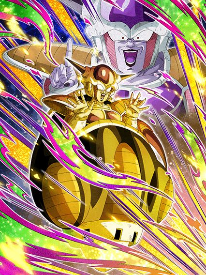
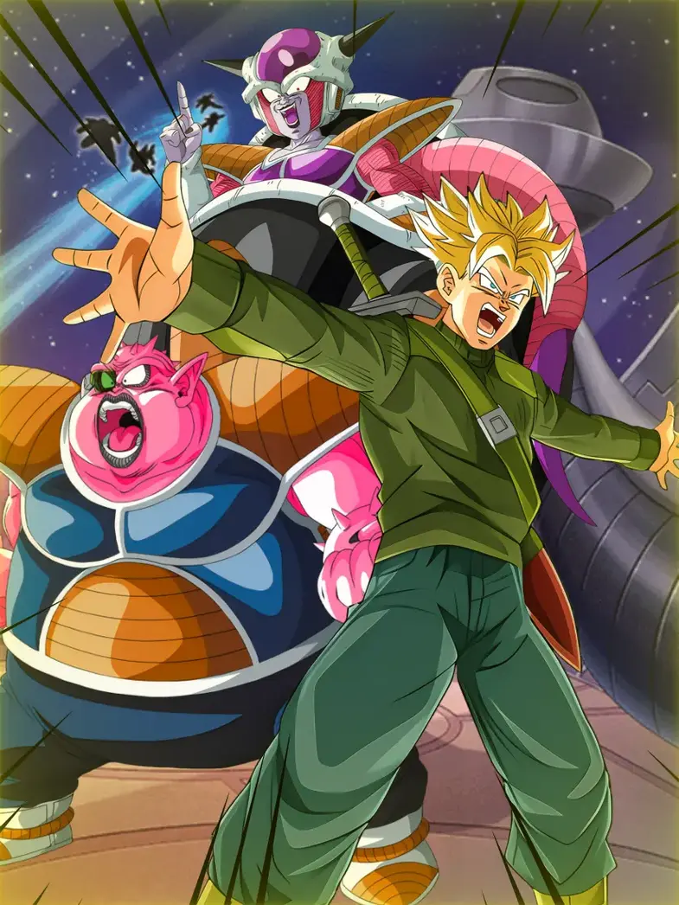

Com licença, meu card não está restrito o suficiente, pode colocar mais restrições inúteis.
O Freeza é um exemplo de card que seria bom se não fosse restrito em tudo, já que ele não tem nada se você usar ele em qualquer outro time
Pra começar, o Freeza tem uma intro restrita a ter pelo menos 2 aliados Space-Traveling Warriors, o que é até aceitável e bem útil já que ele ganha 100% de ATK e DEF e um adicional com 50% de chance de ser super por 5 turnos
Aí começa o problema, já que o Freeza ganha 20% de DEF e 10% de chance de crítico por aliado Terrifying Conquerors, e fazendo as contas você já vê que essa defesa vai fazer falta se não tiver um time completo
E ainda não acaba, ele obviamente tem que ter buffs com a restrição de enfrentar um inimigo Pure Saiyans né
E pra completar a desgraça, ainda tem q ser Pure Saiyans e Low-Class Warrior, se tiver, o Freeza ganha mais dano, lança um super attack adicional e ainda aumenta o crítico em 50%, ou seja, se você tiver com um time Terrifying Conquerors, ele dá crítico garantido
E aí o Freeza tem uma active skill que felizmente tem uma condição de inimigo Pure Saiyans também mas que pelo menos pode ser ativada no turno 5 caso não tenha
E o Freeza stacka 30% de ATK no super attack, então a active depois de stackar vai obviamente dar bastante dano
Acho que ficou bem óbvio o problema do Freeza, já que se você tirar todas as restrições dele, ele vira um card muito bom, mas infelizmente do jeito que ele tá, não dá pra usar ele em basicamente nada
É engraçado pq o time inteiro dele basicamente não tem personagens usáveis, alguém ajude esse rapaz.

Não dá pra entender se esse cara devia ajudar o Freeza ou não.
Sendo bem direto, essa cara era pra ser o card q fica no slot 1 pra proteger o Freeza, mas ele não linka bem com o Freeza então ele tá mais atrapalhando que ajudando, já q ele não tem Big Bad Bosses nem nada
Esse cara é um suporte pra Inhuman Deeds, tem crítico, tem adicionais, em geral bem decente, e caso tenha um Freeza no time, ele lança outro adicional com 70% de chance de ser super também
E caso o Freeza esteja no turno com ele, ele tem defesa ativa, reforçando a ideia de ele ser um personagem slot 1
Masss infelizmente ele não é um tank, a defesa dele não é boa e os links horríveis dele só pioram, assim fica difícil ele fazer a única coisa q ele deveria fazer né?
")
Me diz.
Me diz se é possível defender o Global.
Uma pessoa desavisada vai perguntar "Ué, q que isso tá fazendo aquiKKKK osh", e uma pessoa que sabe oq tá rolando também vai fazer essa pergunta
Se lembra do Goku Black Rosé PHY? ESSE CARA é o card secundário dele, agora me explica COMO ele veio parar aqui?
Foi uma situação bem engraçada, já que o Goku Black foi um Global first e chegou no JP agora, e ele do nada veio com esse Trunks, deixando todo mundo confuso e com mais ódio da bagunça que o Global anda sendo
Pelo menos ele veio pra gente também, desse jeito estúpido aí entrando no banner do Freeza
Bom, o Trunks em si é um card bem decente, o problema é que ele precisa de um time inteiro Time Travelers que pode ou não ser difícil, mas eu não diria que é a pior coisa não
Com o time completo ele tem 300% de ATK e DEF, 60% de chance de desvio e chance de crítico também
Além de ele ter uma mecânica bem quebrada de aumentar a chance de crítico e desvio pra 90% se o HP estiver abaixo de 70%, é bem desbalanceado isso aí, então ele pode vir a ser útil
Em geral ele é um card bonito, tem uma OST de intro maneira e na minha opinião as animações dele são melhores que as do Goku Black (KKKKKKKKKK)
Certamente o meu personagem favorito desse momento icônico aí

É canon, pode confiar.